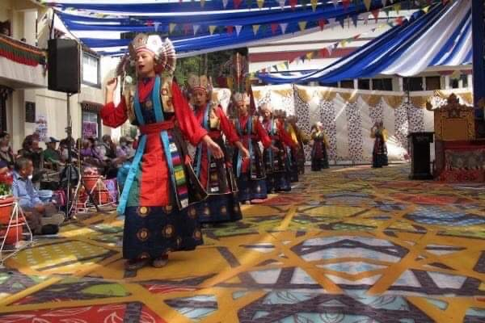

Lhamo (Opera)
-

This is an image from the lhamo(opera) named "NANGSA WOEBUM". A story about a young girl who has a strong desire to name her life to follow bhuddhism fully but is forcefully married and accused of the deeds she hasnot done.When she is beaten till death, she is given a chance to be reborn in the same form of her as she had done no bad deeds in her life. This particular part is where her mother is advicing how t be a good daughter-in-law to the prince.
-

This image of "NGONPA" was taken from the same drama nangsa woebum. Ngonpa is needed in every start of the drama and can be known as the workers of heaven. There job is to guide the way to the deities and ask questions as per his curiousity.
-

This image is where Nangsa woebum( The female lead) selflessly provides them with food with taking the risk of her evil aunt to realize. The monks are highly respected so providing them with food was a must. They are praying and repeating mantras as usual.
-

This is the picture of "RINGAK", also known as the semi-goddess of thier own land. The ringak group are alos needed in every start of lhamo and are amde to sing prayers in opera.
-

This part is where the evil aunt is pulling and dragging nangsa for deeds she was blamed. Actually, the aunt herself had hated nangsa from the start and she was the one creating all the chaos.
-

This is just a picture of me getting a token of gratitude from the head of the Tsum valley which we had recently gone before this semester. A small statue of Guru Rinpoche and lots of Khatas. This picture is taken at the end of the Opera performance "Milarepa".